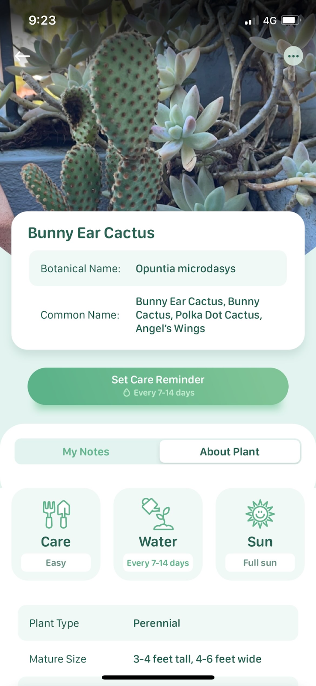
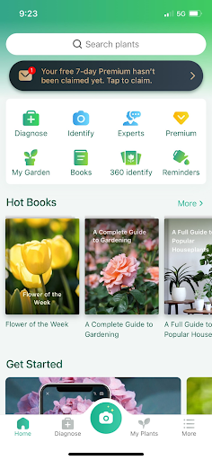

Green Thumb comprises two primary pieces of technology: a soil probe and a phone app. These technologies work together to assist plant growers in tracking and maintaining plant health. The probe consists of sensors to measure soil nutrition while the app records these measurements, assesses overall plant health and diagnoses plant disease. Combined, this technology serves as a powerful education tool and database for novice and advanced gardeners alike.
The Green Thumb soil probe is a circuit fitted with sensors to measure the temperature, moisture and pH of a plants’ soil. To collect measurements, the probe is placed directly into the soil of a pot and is triggered by a button on the Green Thumb app to collect measurements. These measurements are transmitted to the app through Wi-Fi and stored in a database. The probe is battery powered and portable so that it can be used to measure soil health in countless pots around the home. The ease of use and portability appeals to a wide market of plant growers while saving them money. The soil probe is the essential tool for this project which gives Green Thumb a competitive advantage against other plant health apps on the market.
The primary function of the Green Thumb app is a plant health database. Upon signing up, users are prompted to build their first plant profile in the app. They are asked to identify the plant species, if they are unsure, users can scan the plant with their camera and using image recognition, the app will automatically identify the plant type. Once the species is identified, the app will be able to provide specific information and recommend the ideal values for soil health variables measured through the probe. When using the probe, the app will harness AI to determine the health of the plant based on results of the probe measurement. If the plant is classified as unhealthy, the app will be able to determine the cause and provide suggestions to restore the plant back to health.
Plant profiles store the data received from the soil probe to allow users to look back over historical data and compare variables through helpful infographics that can be viewed over a week, month or annual timeframe. Additionally, users can also upload photos of their plant to its respective profile to track growth and changes in its appearance. Over time, the Green Thumb AI will continually process the probe data to detect patterns and provide users with further advice. For example if the AI detects some gradual changes in soil health due to changing weather, the chat bot would read: “Your soil conditions were ideal in summer, but now that it’s winter the soil temperature is dropping fast. Try placing your plant in a sunnier position during these colder months to keep up the healthy growth!”
The final innovative function of the Green Thumb app is the powerful diagnosis tool. If a user notices a change in their plant’s appearance and is concerned that their plant has become diseased, they can use this tool to diagnose the disease and learn how to restore their plant. When launching the diagnosis tool, users are instructed to upload photos of the affected area of the plant. These photos are run through Green Thumb’s catalogue of plant disease images to identify possible diagnosis’. Next, the user is required to use the soil probe to take soil readings. The diagnosis tool compares these results to the values set in the plant profile and the images to determine the cause of the disease. For example, if images display white spots on leaves and the soil probe detects high nitrogen levels the diagnosis tool will determine that spider mites are the cause of plant decay. This diagnosis is then stored in the relevant plant profile so users can track their plants journey back to health. Through machine learning Green Thumb’s diagnosis tool will be highly accurate and mitigate the risk of mistreatment.
Bridget, the creative mind behind Green Thumb, has always loved gardening - often getting in trouble from her partner for bringing home yet another plant! When tasked with coming up with a project plan in Assignment 1 she knew she wanted to use technology to make gardening easier but wasn't sure where to start. Below is the process that led to the conception of Green Thumb.

Then along came ABRAIN...
ABRAIN was formed to tackle Assignment 2. Arvee, Nikhil, Idris, Adrian, Renee and Bridget met (somewhat awkwardly) for the first time and each introduced their project ideas to the group. The group decided that we wanted to pursue Green Thumb as their group project for the next 2 assignments as we felt it appealed to a wide audience, solved a real problem and could empower and educate people. Additionally, we were pleased to discover that Nikhil actually had prior engineering experience building circuits with Arduino so this was a significant motivator for our decision as we were confident we could actually build what the project was suggesting.
As a group, we assessed the Green Thumb project and brainstormed ideas to improve it. The idea felt very large and possibly out of scope for the allowed time in assignment 3 so we decided to reduce some elements of the project and focus our efforts on the more innovative components that make Green Thumb unique and effective. Ultimately, that meant removing the social media functions proposed by Bridget in assignment 1. Of all the components to Green Thumb, the group felt that this was the least essential and that it would strain resources moving into assignment 3. With this refined version of the project, we confidently submitted assignment 2 and eagerly awaited feedback
While we awaited our A2 marks, we began exploring how to proceed with this project. We were confident in Nikhil’s ability to lead the circuit side of the project, however we were unsure how to tackle the rest of the tasks. To make the project easier to digest, we broke it down to identify the essential components to create Green Thumb. This was identified as:
As Intro to IT students, our programming skills are minimal at best. We knew it would be out of scope to build an entirely functional app with our skills in the assigned time frame so we began brainstorming possible artefacts we could deliver that would demonstrate how Green Thumb will work and make it easier for a more skilled group to take over to and get the app to a marketable state. We decided it was important to develop artefacts for each of the essential components identified above.
With these goals set, we got to work developing our artefacts. Not long after, we received our feedback from Assignment 2. It was suggested that we take a deeper look into tools and skills required for this project would be beneficial as well as an extensive investigation into competing technologies and how Green Thumb will be different. We made it our priority to address these points moving into assignment 3 to ensure we complete this project.
The best way to understand competing technologies is by using them. We got to work downloading and engaging with popular plant health apps to examine the functionalities and to gather insights to improve Green Thumb. Our findings were summarised in a table to easily compare the functions and tools offered by these popular apps.
| App | Price | Features |
|---|---|---|
| Disease Identifier | Free to download with 3 day free trial then costs $4.99 per month | Identifies species and disease through image recognition. Provides advice to bring diseased plants back to health but does not record health records or allow users to create plant profiles. |
| Blossom | Free to download with 3 day trial then costs $6.49 per month | Does not identify disease. However, users can take photos of plants to identify the species.Provides generic species specific care guides. Users can add the plants that they own to a virtual garden set up reminders for watering and fertilization. |
| Picture This | Free to download with 7 day trial, then costs $39.99 per year | Take photos of plants to identify the plant species. Also has a diagnosis tool for users to add images of the sick part of the plant. If photos cannot be taken they can also engage with the chatbot to describe symptoms and get treatment advice. Can set up profiles for plants within the app. Within the plant profile they will get predetermined advice about growing difficulty level, ideal sunlight, temperature and soil conditions. Users can add their own notes and photos |
| Plant Recognizer | Free to download the basic version with ads. Full version costs $14.99 per month | Users can take photos of plants to identify the species. Cannot diagnose disease. Once a species is identified the app provides ‘plant specifics’ which give information about the plant including: possible pet-toxicity, difficulty to grow and health benefits like air purification. |
| Plantin | Free to download with 3 day free trial, then a one off payment of $319.99 is required | Users can take photos of plants to identify the species. Can also identify disease through photos. Provides species specific care advice and tracks plant history through plant profiles. When facing gardening difficulties the users can connect with professional botanists for advice |
| Plant Health | Free with in app purchases to unlock premium actions | Cannot identify disease or plant species. Users can track the health of their plant by creating profiles and uploading photos showing growth over time. Does not store any other data but pictures. No care advice provided |
| Plantr | Free to download with 3 day free trial, then costs $40.99 per year | Identifies plant species through photo recognition. Cannot diagnose disease. Can add plants to the app to set up watering and care reminders. Provides some limited care tips but these were mostly hidden behind the paywall |
From this market analysis we gained some significant insights. The hidden costs of these apps were a surprise and fuels our motivation to provide an affordable solution for tracking plant health. We decided that the Green Thumb app will be a free to download app with any purchase of the soil probe. We will need to consider the costs associated with running the app and keeping it updated and explore options to generate revenue to support that. Possible revenue streams to keep Green Thumb profitable would be:
This will be an important conversation to have with marketing associates and product managers leading up to the launch of Green Thumb to ensure the app is viable and profitable.
While developing the artefacts, we took the advice of our A2 marker and did a deeper investigation into the tools and skills required for this project. We researched countless technologies to identify the best software and hardware to bring Green Thumb to life as well as understanding the skills required to use this technology. Outlined below is the journey to take each of our artefacts from concept to prototype/proof-of-work.
We began by firstly researching several of our competitor’s application interfaces to get design inspiration. We had considered our brand colour (Green Thumb) and its consistency on the page, how many certain plants we have to include for the prototype sample, as well as covering basic UI elements on an application (such as links, page dimensions, and its accessibility). Some examples of design templates we based it from are:
 .png)
CContinuing on from our discussion, we thought about how our competitors do their UI, in particular what they have done very well, as well as what they could have done to improve. Using that information, we made Green Thumb’s different from the rest by creating it with the inspiration from the best parts of our competitor’s UI. For example, one of the competitors is Plantr, but their main flaw is that they have got too many advertisements on their app, and their AI didn’t offer much help outside of identifying species. In addition, they force the user to manually enter watering suggestions and care instructions instead of being automatically included. We made sure that Green Thumb will be an ad-free app, as well as having a considerably advanced AI that can give consistent data (when the soil probe is used as well). In this way, we are considerably standing out from our competitors.
Moreover, our group drew up a rough mock up of the customer journey, talking about the further decisions we should make based on previous discussions and considerations when they are implemented.

Finally, we started creating the interface with Figma. Initially when we created the buttons for the pages, it had a few texts alongside it. However in further contemplation between the team, the buttons have been redesigned. Some of them have a function that would change based on probe readings so we wanted to keep it image based with minimal text. We decided that it's more important to have visualised images instead of having more text. Below Are the examples of this:

During the process, however, we did encounter several challenges. They are:
Eventually we got to the point where there were functionality flaws in the prototype. We had to do something with the camera because it is complicated to integrate it with figma. In the end however, the team overcame this obstacle by screenshotting an iphone’s camera interface and overlaid our desired images on top of the camera interface area. This way it looked like the app went to the phone’s camera and took an image. Also, we had trouble visualising plant health and history on the app. Though we were able to find a solution for the plant health, it was initially in the form of percentages but the resulting data would be inconsistent. We decided to separate it into 3 parts, soil acidity, temperature and moisture that have visual images representing its current condition (shown above).
Other changes that we made were (1) adding the settings button. One of our team members, Idris,had suggested if we have an application, there should be a settings page for it, and (2) changed Serial Code to QR Code; as QR code entices the user to use the camera function making it easier to access rather than typing a series of characters and pressing enter.
Nevertheless, even with these challenges and functionality flaws, we were able to implement everything that we originally planned to put in. There was an FAQs page section, though we decided it wasn’t adding value to the app and to the customer experience. The team realised we can do this over the Chatbot interface instead, rather than having a specific page full of dull text this enabled the “FAQ” to be more engaging and more creative, additionally we were able to utilize figma’s features to our advantage.
Testing phase and feedback:
ABRAIN has now reached the completion of assignment 3, and we are now handing this project onto the next team to bring it to market. At this stage, we have developed prototypes and strategies that align with each of our goals identified in the project aims. We have;
The next steps for the soil probe is to engage with C#/C++ engineers who will make improvements to the prototypes. They can either source and build, or design and 3D print a rigid and waterproof housing for the Green Thumb Probe. Additionally if another team were to take over the project, the main things they would need to know regarding the tools and technology aspect would be the code for the D1 mini and how the interface of the Blynk app was set up including the authID which contains the key to the receiving value from the board over the WiFi.
TThe user interface for the Green Thumb app has now been designed so the next logical step will be to develop the app. A software architect will be required to build the app within Swift and JAVA IDEs to ensure the app is compatible for both android and iOS devices. The software architect may use the UI prototype as a template, however, it is advisable that they engage with UI and UX specialists who can further develop the front-end to ensure a smooth user experience and streamlined design to further differentiate Green Thumb from its competitors. Additionally, the software architect will be required to build and secure the Green Thumb database using the mySQL code snippet and database ER diagram as a guide.
The next steps for getting the Green Thumb AI deployed will be employing a Data Scientist or Machine-Learning Engineer. We have researched and selected the software that we want to use, therefore we would ideally be looking for someone with experience using IBM Studio and someone with expertise coding in Java or Python. We would also need to employ a horticulturalist to curate the data for the supervised machine learning model with accurate expert information on the plants. This is critical as the values entered into our system will need to be well researched in order for our product to be accurate and competitive.
AAs the number of team members working on this project grows it will be necessary to educate staff on Cybersecurity to avoid phishing and similar attacks. More sophisticated Cybersecurity measures will need to be implemented as time goes by and new technology emerges. Consulting with cybersecurity professionals would be very beneficial in the future to avoid any new form of data breach and to periodically check up on systems to ensure they are uncompromised. Green Thumb’s data will become more and more valuable, as such, it would also be wise to consider hiring or setting up a backup of the servers and databases in case of a major hardware breach or failure. This will allow Green Thumb to keep operating even after a catastrophic event.
Finally, once these technologies and systems are fully developed it will be essential to engage with marketing consultants to develop a plan to get Green Thumb on the market. The app will need to be hosted on both iOS and android app marketplaces and the soil probes will need to be made available for purchase through an e-commerce channel and related retailers such as Bunnings Warehouse and Flower Power. ABRAIN has worked hard to get this project to where it is now, we are putting our faith in your capable hands and cannot wait to see what becomes of Green Thumb. Good luck!